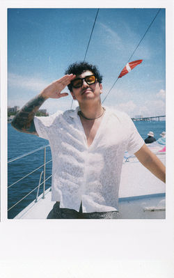

AIDAN MARK / PERSONAL FILES EDMONTON, AB / EST. ON THE WEB
A / M : : RESUME
[ home / projects / resume / e-mail ] * no scripts here *
file no. CV / the slightly more official bit
About the person behind the pages

Aidan MarkSoftware Developer — Edmonton, Alberta
abmark88@gmail.com /
GitHub /
LinkedIn
01. Languages and tools
- Languages
- Python, JavaScript / TypeScript, C++, SQL, Kotlin, HTML and CSS
- Machine learning
- PyTorch, scikit-learn, librosa
- Robotics / graphics
- ROS2, embedded control, WebGL2, GLSL
- Systems
- Linux, Proxmox, Git, WordPress, Jetpack Compose
02. Education
MacEwan University — B.Sc. studies in Computer Science with a minor in Chemistry.
03. Selected technical work
- Oscillator-Level Inverse Synthesis (solo capstone)
- Built automated audio dataset generation, neural-network training and preset export. 193,283 examples; 97.4% top-1 wavetable classification accuracy.
- Campus Delivery Robot (solo project)
- Integrated ROS2, LiDAR SLAM and embedded C++ control on a Jetson/Teensy robot. Mapped an indoor university floor.
- Heaterfy (team project)
- Developed genre embeddings, Spotify integration, the UI and recommendation evaluation.
- Sometimes Aliens Are Not Your Friends (solo game)
- Built a custom WebGL2 3D renderer with GLSL shaders, collisions, scene management and graphics optimizations.
- Universal Rail Systems (client team engagement)
- Worked on a Zero Trust network audit and proof of concept, with responsibility for networking, Active Directory, certificates and proxies.
04. Client development
Freelance websites and operations tools for Foster Media and Lucy Cook Art, including booking, content management and scheduling integrations.
05. Other work
Hospitality operations and management: staff supervision, training, inventory and day-to-day operations.